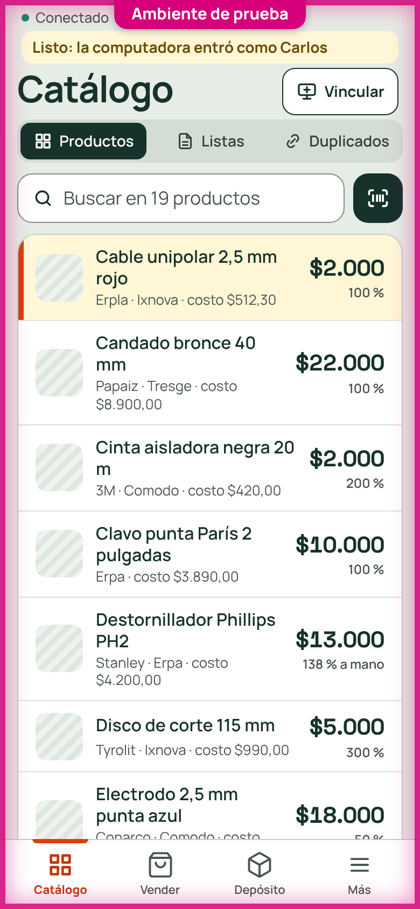

Entrar en la computadora con el celular: sin la pantalla de «Listo»
Pedido de Carlos del 2026-10-15 (tarea T009).
Antes: el celular lee el código, se pone la huella, la computadora entra y el celular muestra una pantalla «Listo: la computadora ya entró», con «Usar este celular como lector» y «Seguir en el celular».
Ahora:
- El celular lee el código de la computadora y se pone la huella (o entra con Google).
- La computadora entra y el celular va directo a su pantalla de siempre.
- Arriba, en la línea de los avisos de la computadora, dice unos segundos «Listo: la computadora entró como Carlos».

- Con la sesión ya abierta en el celular sigue el paso «Entrar en la computadora» / «Ahora no»: abrir el enlace no alcanza.
- Si la computadora no entró (sin conexión, código vencido), la pantalla sigue: dice por qué y tiene «Seguir en el celular».
- El lector no se abre desde acá: se abre cuando la computadora lo pide con «Escanear con el celular».